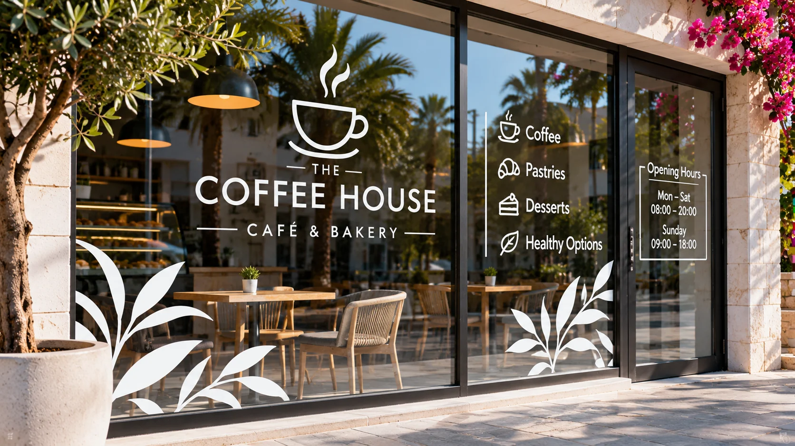

01 / СТЕКЛО И ВИТРИНЫ
Наклейки на стёкла и витрины
Наклейки на окна, стеклянные двери и витрины магазинов. Логотипы, режим работы, рекламные надписи, акции, декоративная графика и оформление коммерческих окон.
Наклейки на стекло Кипр · наклейки на витрины · надписи на окна · графика на стекле